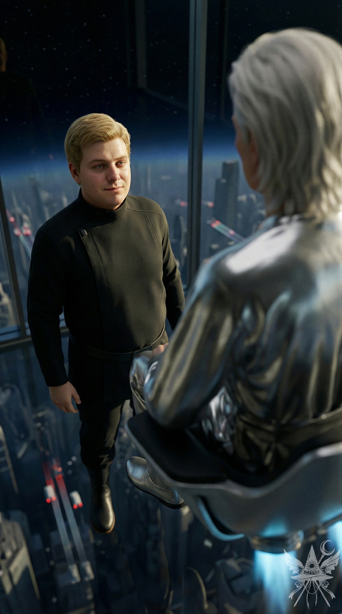

第101章 ただの人間
人間という生き物は、変化に対してひどく鈍感にできている。人生の意味など深く考えもせず、ただ惰性のままに毎日を消費していく。いつから共に茶を飲む習慣が根付いたのか。薄焼きのパンで事足りるはずなのに、なぜわざわざ手間をかけてふっくらと焼き上げるようになったのか。目を大きく見せるためのアイラインは、元は誰の模倣だったのか。日常の些細な疑問すら抱かない彼らは、説明のつかない異常事態や常識を覆す出来事に直面して初めて、古びた言い伝えにすがりつくのだ。
1519年、コルテスがアステカの首都テノチティトランに足を踏み入れた時、現地の人々は彼を風と空気の神ケツァルコアトルの再来だと信じ込んだ。200年後、ジェームズ・クックがハワイに上陸した際も同様だ。人々は彼を神ロノの帰還だと錯覚した。少しばかりの奇跡を演出し、古代の神の再来を装えば、群衆を扇動することなど容易い。ケツァルコアトル、ロノ、マルドゥク、そしてヤハウェでさえも。聖書の甘美な言葉は、いつの時代も為政者によって都合よく解釈され、利用されてきた。
創造主という次元へと昇華した今、群衆の鈍感さと依存性を前に、己の果たすべき役割について思考を巡らせる。強大な力を手にしたからといって、かつての傲慢な神々のように万能ぶりを誇示し、簒奪者の轍を踏むつもりは毛頭ない。
（カナとの議論で、答えは出ているわ。創造主とは、絶対的な権力ではなく、重い責任を負う者のこと……）
かつての創造主たちに翻弄され、搾取され続けてきたすべての存在に対する責任。だが、同時に彼らを新たな神に依存させてもならない。かつて等しく神であった人間たちには、自らの手で未来を切り開き、幸福を掴み取る権利がある。だからこそ、己の使命は、彼らが自立できる世界を再生することに尽きる。
そして何より、人間には真実を知る権利があるのだ。
宇宙の深淵には、あらゆる事象の記録が地層のように積み重なっている。時間を遡り、異なる視点から過去を追体験することなど、今の力をもってすれば容易い。
（それなのに、閻魔はなぜこの力を行使しなかったのかしら。……いいえ、使えなかったのではなく、意図的に隠蔽していたと考えるのが自然ね。あの陰湿なシステムを見れば、一目瞭然だわ）
思考を切り替え、たった四日前に起きた惨劇の爪痕をなぞりながら、荒廃した地球の物理的な復興へ着手する。道路、家屋、橋。無惨に破壊されたインフラの修復は容易い。だが、決定的に失われた命だけは、どうすることもできなかった。
わずか二日間の地獄化。その間に地球の人口は半減した。自ら命を絶った者が三分の一。突如として実体化した幽霊にパニックを起こし、家族や隣人に殺害された者が四分の一。残りは火災や倒壊、あるいは狂乱した野生動物の犠牲者だ。あの狂気の中で正気を保てた者は、ほんの一握りに過ぎない。
（忌まわしい転生システムさえなければ、魂を元の肉体に戻すだけで済んだはずなのに……）
現実は残酷なまでに論理的だった。理不尽な裁判を受けた死者の大半は、押し付けられた罪をあっさりと認め、新たな器への転生を選択してしまっていたのだ。魂の抜けた本来の肉体はただの空洞となり、そこへ順番待ちをしていた別の無関係な魂が次々と滑り込んでいく。この致命的な悪循環が混乱をさらに加速させていた。百回以上の蘇生試行の末、完全な修復は不可能であると見切りをつけざるを得なかった。
地獄化の判決から四日。奇跡的にかつての姿を取り戻した街路に立ち尽くし、人々は悪夢から解放されたかに見えた。
「ただの悪い夢だったのか」
という安堵は、しかし一瞬で消え去る。修復された街並みとは対照的に、隣にいるはずの家族や友人が永遠に失われたという物理的現実に直面したからだ。
街は即座に第二の混乱へと呑み込まれた。空白となった権力の座を巡る醜い争い、暴動、テロ、クーデター未遂。各々の宗教の信者たちは、この不条理な喪失の理由と救済を求めて寺院や教会、モスクへと殺到し、狂乱のままに焦土を彷徨っている。
再建したアクロポリスの神殿に戻り、滑らかな大理石の窓辺から、狂気に染まりゆくアテネの街路を冷ややかに見下ろす。
（なぜ、事態は悪化する一方なの……。菊界を再生させれば地球が混乱し、地球を取り戻そうとすれば、天界や魔界、菊界の連中まで狂わせてしまった。世界を正しく書き換えようとするほど、生み出される苦痛が増大していく。もしかして……私のやったことは、すべて無駄だったのかしら）
その時、鼓膜を劈く爆撃音とともに、堅牢な大理石の柱の一つが轟音を立てて崩れ落ちた。アクロポリスが空爆されているのは明白だった。
＊＊＊
星々がひしめき、隕石の接近すら許されない厳重な宇宙空間。二つの恒星の光を浴びる宙域に、四つの固体惑星が静かに浮かんでいる。無数の巨大な鏡が惑星群を囲い込み、太陽光を余すことなく地表へ反射させていた。すぐ側には臨戦態勢の巨大宇宙空母が停泊し、出撃の時を待つ重々しい緊張感が漂う。恒星系の外縁部には数十ものワームホールが開口し、ひっきりなしに行き交う貨物船が、ある一つのセクターを除く全銀河から貴重な資源を運び込み続けていた。
第一の惑星は、幾重にも重なる立体農園と空に浮かぶ牧場に覆われた緑の星。第二の惑星は、広大な海と南国の島々が点在し、銀河中の富裕層が豪奢な暮らしを謳歌するリゾート地だ。そこから恒星系全体へ、豊かな海の幸が絶え間なく供給されている。第三の惑星は、無数の研究所が放つ人工的な光がなければただの灰色の岩塊にしか見えない。そこでは、他銀河の追随を許さぬ恐るべき兵器が昼夜問わず生み出されていた。
そして、最も小さな四つ目の惑星。それこそが銀河の中枢、中央庁である。
赤道から両極へ果てしなく続く首都はまばゆい光を放ち、成層圏を突き抜ける巨大な塔が漆黒の深宇宙へと雄々しくそびえ立っていた。
金髪の男がエレベーターに乗り込む。上昇するにつれ、厚いガラス越しに眼下の都市景観が広がっていくが、地平線は遥か彼方だ。ひっきりなしに空を走る移動体の光の帯にも構わず、男はただ無表情に天井を見つめていた。この星に夜は訪れない。
柔らかな女性のアナウンスが停止を告げる。促されるままに数段の階段を上がり、六角形の部屋――この世界の中枢へと足を踏み入れた。

空気は冷たく乾燥し、徹底的に管理された無機質な静寂が支配している。眼下に広がる都市の喧騒は巨大なガラス窓と透明な床によって完全に遮断され、足元には深淵のような空間が広がっていた。青みがかった冷たい光のトーンが、この圧倒的な高所特有の、感情の起伏を押し殺したような緊張感を際立たせている。
壁一面のモニターには各政府機関からの情報がひしめき、その手前で、強い金属光沢を放つ衣服を纏った議長が、底面から青い推進炎を吹き出す椅子に腰掛けていた。若々しい後ろ姿とは裏腹に、その声には数百万年も権力の座に君臨してきた老獪さが滲んでいる。
「やあ、久しぶりだね。音沙汰もなかったから、貴重な人材を失ったかと思っていたよ」
透明な床の上に直立した男は、口角をわずかに上げて微笑の形を作ると、軽く頭を下げた。
「申し訳ありません。自分が仕掛けた罠に嵌ってしまいまして。植民星と連絡が取れれば、すぐにご報告していたのですが……」
「無理な相談だということは、君が一番よく分かっているはずだ。法に則って行動する以上、我々は直接介入できない。植民星は定められたプログラム通りに発展させる必要があり、余計な情報――例えば、自分たちだけが宇宙に存在するわけではない、といったこと――を与えてはいけない決まりだ。……ところで、君が持ってきたのは、あまり良くない知らせのようだが」
議長の言葉に、男は顔面の筋肉を弛緩させたまま淡々と答える。
「お察しの通りです。植民星は今、とある狂ったポルターガイストとその操り人形に乗っ取られているようでして」
「もういい。情報は君が思っている以上に早く私の耳に入っている」
静かな、しかし有無を言わせぬ拒絶に一瞬だけたじろいだが、すぐに理知的な技術者の顔を取り戻す。
「では、議長、どうなさるおつもりですか？ 一刻も早く武力介入すべきだニャ……」
無音の空間に、不釣り合いな語尾が響き渡った。
議長の乗る椅子が、冷たい青の光を反射させながら天井付近までゆっくりと浮上する。
「様子を見よう。もっといい考えがある。……ところで、その口癖はどうしたんだね？」
鋭い指摘に、男は忌々しげに目を伏せた。
「……失礼しました。すぐに直します」
＊＊＊

波が緩やかに岩肌を撫でる。雄大な岩壁は、過ぎ去った栄光の残骸のようにそびえ立っていた。狭苦しい路地では、まるで何度も再生された映像のように、老朽化した車が轟音を立てて走り回り、排気ガスの不快な熱気が満ちている。交差点を行き交う人々は皆、せわしない。かつて世界を席巻したアレクサンドロス大王が歩いたであろうこの石畳も、今や誰も気に留めることはなく、ただすり減った道の上を慌ただしい足音が通り過ぎていくだけだ。
（溜め息。世界はこんなはずじゃなかった。夏の終わりが近いというのに、太陽の照り返しは容赦なく肌を刺す。……おかしいわね。このまとわりつくような熱さも、苛立ちも、ずっと前にも同じように感じた気がする）
ふと、奇妙な感覚に囚われる。まるで色彩が抜け落ちたかのように、見慣れたはずの街並みがひどく無機質で、乾燥した灰褐色のトーンに沈んで見えた。沖合に浮かぶ見知らぬヨットの白い帆だけが、静寂の中で異質な存在感を放っている。
（土産物屋か……。すっかり俗化してしまった。昔ながらの店は姿を消し、ろうそく一本手に入れるのにも、こんなくだらない店に入るしかないなんて）
同時に店に足を踏み入れたのは、休暇中のカップルと……見慣れない男だ。
（観光客にしては妙ね。カバンに本がぎっしり詰まっている）
心からの安らぎなど、この場所にはもうない。あるのは騒がしい観光客を乗せたバスと、表面的なガイドツアーだけだ。
「いらっしゃいませー！ 観光客の方、何かお探しですか？」
（マニュアル通りの薄っぺらい対応。地元民にまで同じセリフを吐くとはね……それに、あの男、こっちを見ているわ。気のせいじゃない）
カップルはすぐさま棚に吸い寄せられ、貝殻や船の模型、安っぽいお守りなど、ありとあらゆる土産物に目を輝かせている。
「ろうそくはありますか？ 黒いろうそく」
「ああ、どこかにあったはずです……」
（よかった。もう時間がない。早く始めないと……）
愛想のいい店主が持ってきたのは、奇妙なほど細長い黒いろうそくだった。表面には見慣れない文字がプリントされている。
（見慣れない……はずなのに。なぜか、ひどく見覚えがあるわ）
「もっと普通の……文字が書いてないろうそくはありませんか？」
「何を仰いますか、お客様！ これはただのろうそくじゃありませんよ！ 最高級品！ 日本製です！」
（胡散臭い店主だ……。いや、今は手段を選んでいる余裕はない。それにしても、このやり取り、どこかで……）
「じゃあ、10本ください」
会計を済ませようとした瞬間、男がおもむろに黒いろうそくの一つを手に取った。
「ちょっと待ってください。そのろうそく、何か勘違いされていませんか？ 日本のろうそくは陰陽道に基づいて作られているので……使い方が悪いと、思わぬ結果になることもありますよ」
（一体、何様のつもり？ 儀式に使うことを見抜かれた？）
「あ、いえ。このろうそくは、本棚の飾りにするんです」
平静を装い、男から視線を外す。
店を出る時、軽く目を合わせた。眼鏡の奥の知的な瞳が、何かを見透かしているように見えた。
（本当に図々しい男だわ！）
店を出て角を曲がったところで、背後に気配が張り付いた。
「すみません。お気を悪くされたなら、謝ります」
（は？ 別に気を悪くしてなどいないけれど！？）
男は眼鏡を外し、ポケットにしまった。
「ただ、あなたがこれから……危険な道を進もうとしているような気がして。思わず、声をかけてしまいました」
顔を正面から見た瞬間、言いようのない懐かしさが胸を突き刺した。穏やかなライトブラウンの瞳、頼もしげな広い肩。すべてが不思議なほどの安心感を与えてくる。相手は自分より少し年上に見えた。
（落ち着いて。ただの男に気を取られてはいけないわ。私の目的は何だった？ それに、こんな私を理解してくれる人間なんているはずがない）
「そうだったんですか。とにかく、ろうそくの使い方について、あんな風に人前で話すのはやめてください。今度は気を付けて」
（しまった。「今度は」なんて……まるで、また会うみたいな言い方……）
「本当にすみません。……あの、もし良かったら、二人でゆっくり話せる場所へ行きませんか？ 自己紹介が遅れました。アレックスです。改めて、よろしくお願いします」
（アレックス……！？ なぜ、その名前を……？）
「メデアです。こちらこそ」
（そうね。儀式までまだ時間はあるし……この不思議な男の話を聞いてみようかしら）
「ええ、今は特に用事もないので、少しお話しても構いません。おすすめの場所はありますか？」
（きっと、ありきたりなレストランかカフェに誘ってくるんでしょうね。男なんてみんな……）
「リュカベットスの丘の麓はどうですか？ 人も少ないですし、静かに話せると思います」
（リュカベットスの丘！？ なぜ、私の秘密の場所を知っているの？）
「……分かりました。ところで、アレックスさんは……どうして、日本のろうそくのことを……？」
＊＊＊
（この数日、自分がまるで別人みたいだわ。男なんてみんな愚かで下品な生き物だと思っていたのに……アレクサンドロスが頭から離れない。悪魔のことになると専門家みたいに博識で、魔界に一年も住んでいたなんて。話せば話すほど、自分も一緒にそこにいたような……不思議な感覚に囚われる。前世の記憶が蘇ってくるみたい……。これは、魂の共鳴？ それとも……もしかして、恋……？ いや、まさか、こんな短期間で……。でも……もう抑えきれない。明日、告白しよう）
＊＊＊
半年後、二人は結婚した。アレクサンドロスはアテネ大学の歴史講師となり、メデアも学生になった。魔法の研究はあくまで学問としての探求にとどまるようになり、世界を変えたいというかつての情熱は、穏やかな日々の中で急速に冷めていく。
「人間は弱く、必ず死を迎える。だからこそ、できる範囲で幸せを築くことが大切なんだ。自分ではどうにもならないことに囚われることはない。精一杯生きて、老後に楽しかった思い出を振り返りながら笑って過ごせるように生きよう」
彼のその言葉が、心に深く刻み込まれていた。ただの人間として生きる日常に、ささやかな幸せを見出し始めていたのだ。
それでも。
夫と子供たちが眠りについた後、一人で窓辺に立ち、冷たい夜の空気に身を委ねることがある。オレンジ色の街の明かりが遠くで滲み、冷え切ったガラスに触れた指先から、深い孤独感が静かに這い上がってくる。
時々、夢の中で、名前を呼ぶ少女の声が聞こえるのだ。まるで、目を覚ませと囁きかけるように。
そんな夢を見るたびに、違う人生を歩んでいるような、あるいはとても大切なものを置き忘れてきてしまったような、ひどく切ない感覚に包まれる。薬指で鈍く光る指輪をなぞりながら、ふと思う。あの時、もっと何かできたのではないか、と。
……でも、ただの人間に、一体何ができると言うのだろうか？
[SYSTEM ALERT: 音響兵器デプロイ完了]
▼ 本章の絶望を1000%味わうための専用聴覚データ ▼
■ YouTube：『Fire in the Snow (Deep Melting Dub)』